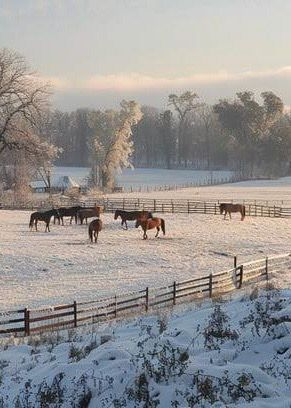

Starting my little corner of the internet
Notes on finishing university at 22, building this site from scratch, and wanting a cozy place to log books, bakes, hockey games, and everyday life without algorithms.
Read full entry →A little bit of everything I'm into right now: late-night reads, comfort films, fresh bakes, life updates, and way too many hockey opinions. Grab a warm drink, snuggle up, and stay a while.



newest entries first
Notes on finishing university at 22, building this site from scratch, and wanting a cozy place to log books, bakes, hockey games, and everyday life without algorithms.
Read full entry →Write a few cozy thoughts about what you're reading right now, favorite quotes, or tea pairings.
Another spot for your latest five-star read and mini review.
matinees, late-night rewatches & comfort series
Your mini review, cinematography notes, and favorite comfort scenes.
Popcorn, dim lights, and cozy soundtrack appreciation.
warm bread, flaky pastries & tried-and-true recipes
Soft, pillowy morning rolls swirled with caramelized brown butter, dark muscovado sugar, and Ceylon cinnamon.
Crisp golden crust with an airy crumb—perfect alongside winter soup or warm out of the tin.
uni life, systems design, projects & technical notes
Things I've learned surviving labs, CAD late nights, group projects, and getting ready to graduate.
Add your favorite plays, top-shelf goals, goalie glove saves, and team notes here.